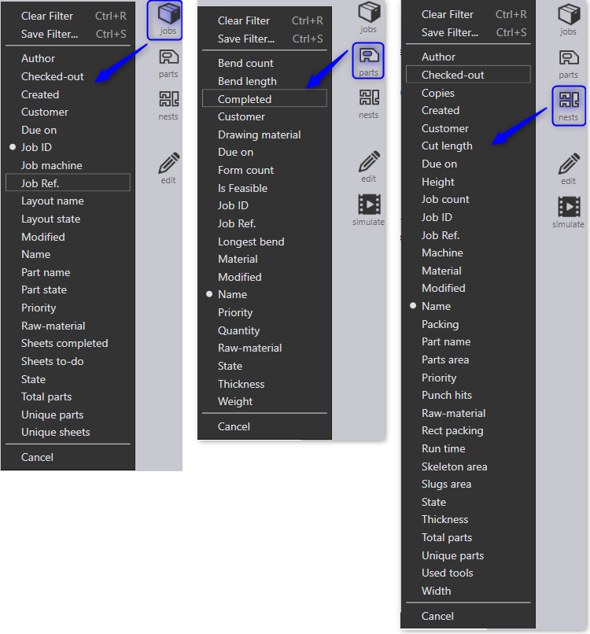
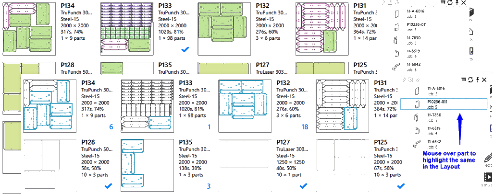
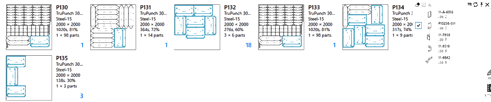
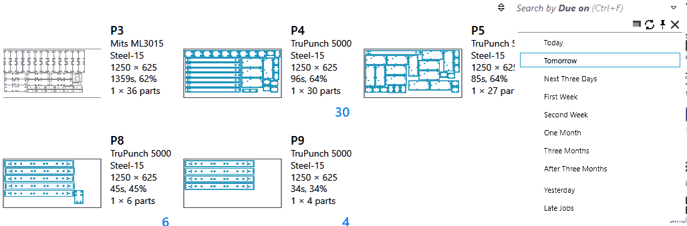
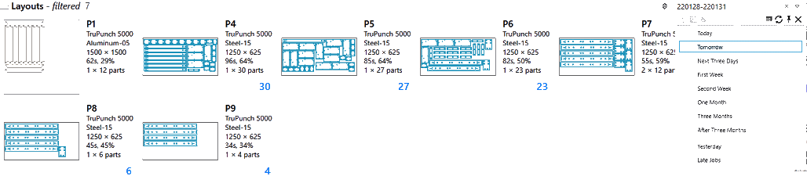
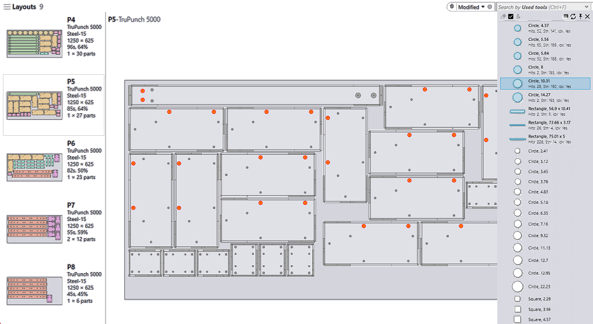
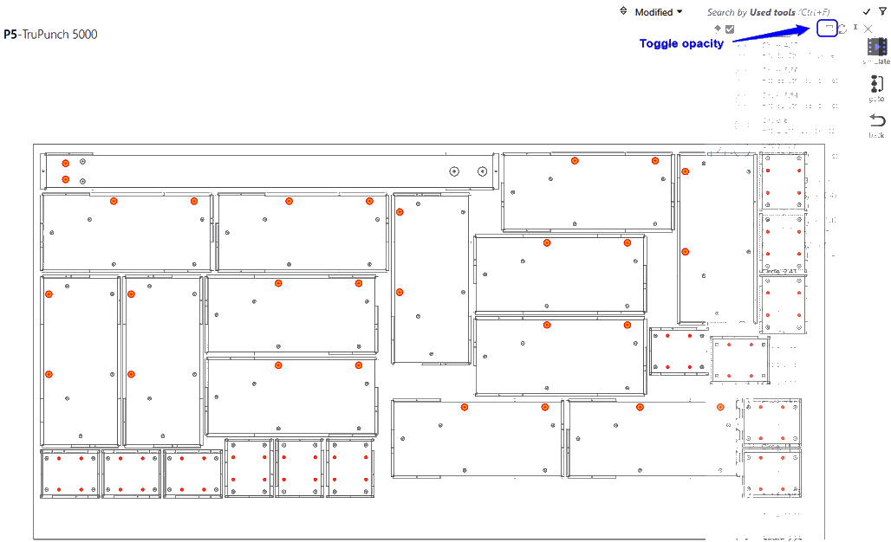

Filtro pagina JOB
Il filtro pagina Job semplifica l’individuazione di job, pezzi attivi e nesting in base ai seguenti criteri:
-
Criteri per stabilire l’ordine come priorità, data di scadenza, cliente, pezzo ordinato, quantità, ecc.
-
Stato di pianificazione/programmazione come le macchine * programmate, le lamiere *da fare, le lamiere completate, i pezzi annidati, i layout annidati, ecc.
-
Attributi del nesting, efficienza del nesting, materiale grezzo, pezzi * unici e *totali, ID job e conteggi.

Filtri a titolo d’esempio
Nome pezzo/layout
Il campo Nome del pezzo viene visualizzato nella pagina Job e Nesting. Inserendo il testo di ricerca, elenca tutte le lamiere/job contenenti i pezzi corrispondenti al termine di ricerca.

Selezionando le voci dal suggerimento si restringe la ricerca ai pezzi selezionati.

Priorità e data di scadenza
Le priorità e le date di scadenza vengono assegnate a un pezzo in un job. Il campo Priorità, come il campo "Nome pezzo", consente agli utenti di trovare nesting/job con pezzi con la priorità più alta. I pezzi ad alta priorità possono essere posizionate su un nesting evidenziandoli passando il mouse sul menu dei suggerimenti. Allo stesso modo, è possibile cercare i pezzi con una con data di scadenza specifica e posizionarli su un nesting usando la funzione di evidenziazione.

A parte i filtri predefiniti per la data di scadenza come Oggi, Ieri, Domani ecc., è anche possibile inserire valori/intervalli di date personalizzati in formato aammgg nella casella di testo di ricerca. Formati di data accettabili sono:
-
Formati con operatori di uguaglianza/disuguaglianza (<, <=, >, >=, =) seguiti dal valore della data. Ad es., con >=220121 si cercherebbero tutte le voci con scadenza il 21 gennaio 2022 o in una data successiva.
-
Formati dell’intervallo di date come quella nell’immagine sottostante. Cerca tutti i nesting con scadenza a partire dal 28 gennaio 2022 e prima del 30 gennaio 2022.

Utensili usati
Come la libreria pezzi, anche i nesting possono essere cercati in base agli utensili di punzonatura utilizzati. Per cercare in base agli utensili usati:
-
Selezionare il campo Utensili usati dalle colonne dei filtri disponibili. JFY Plus presenta un elenco di tutti gli utensili usati disponibili.
-
In generale, è un elenco lungo. Utilizzare termini di ricerca come il nome dello strumento, la forma, le dimensioni, ecc. per restringere questo elenco allo strumento che si sta cercando.
-
Selezionare una o più voce dall’elenco per filtrare i pezzi in cui vengono usati gli utensili in questione. Passando alla visualizzazione dettagli, evidenzia gli utensili usati. Passando alla vista simulazione, riflette lo stato nell’anteprima dell’attrezzaggio.

A parte: spesso l’elenco dei filtri nasconde il contenuto della ricerca dietro di sé. Usa
Comando Attiva/disattiva opacità * per attivare/disattivare la trasparenza. La trasparenza può anche essere attivata/disattivata utilizzando il *tasto destro del mouse in un punto qualsiasi dell’elenco dei filtri.
